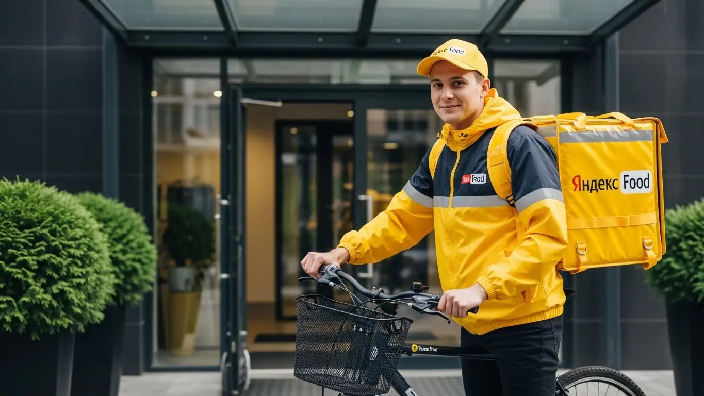
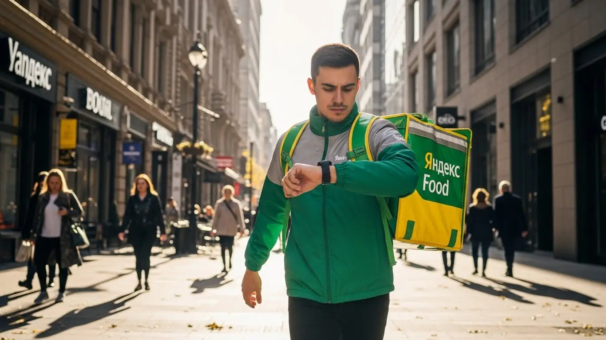

Работа курьером Яндекс Еда в Лобне в 2025-2026: доход и условия

- Работа курьером Яндекс Еды в Лобне: для кого эта вакансия и что вы получите
- Сколько вы будете зарабатывать курьером в Лобне: калькулятор дохода и разбор выплат
- Реальный заработок курьера в Лобне: смены и месячный доход
- График работы и форматы занятости
- Требования к кандидату и документы
- Самозанятость, налоги и юридическая чистота
- Пошаговое оформление и первый выход на линию в Лобне
- Пешком, на вело или на авто: что выгоднее в Лобне
- Районы, маршруты и «топовые» зоны заказов в Лобне
- Безопасность, страховка, штрафы и оплата простоя
- Плюсы и возможные минусы работы курьером в Лобне
- Реальные истории и отзывы курьеров из Лобни
- Ответы на главные вопросы о работе курьером Яндекс Еды в Лобне
- Короткие ответы на главные вопросы
- Итоги и ваш следующий шаг
Все города
Думаешь, работа курьером в Лобне — это просто сел на велик и поехал рубить бабло? Как бы не так. Я видел десятки новичков, которые сдувались через месяц, столкнувшись с реальностью: вечные пробки у переезда, заказы в новостройки Катюшек, где и навигатор сходит с ума, и реальный заработок, который почему-то не сходится с рекламными обещаниями. Забудь про общие статьи. Здесь мы говорим начистоту — только про Лобню, только по делу.
Работа курьером Яндекс Еды в Лобне — это не спринт, а марафон. Твой чистый доход зависит не только от скорости, но и от того, понимаешь ли ты, как работает система. Это знание, где выше спрос после восьми вечера, как не убить подвеску на разбитых дорогах частного сектора и почему рейтинг в приложении «Яндекс Про» важнее, чем кажется на первый взгляд. Большинство новичков здесь теряют деньги на трёх вещах: неправильный выбор района для старта, незнание пиковых часов и наивная вера в то, что каждый заказ одинаково выгоден.
В этом гиде я разложу всё по полкам. Мы честно посчитаем, сколько реально можно заработать в Лобне пешком, на велосипеде и на авто с учётом всех расходов. Я покажу на карте «рыбные» районы, где заказы есть всегда, и «мёртвые зоны», куда лучше не соваться. Разберём, как погода и пробки на Букинском шоссе влияют на твой чек, за что на самом деле прилетают штрафы и как их оспорить. Если ты хочешь узнать ключевые условия и сразу перейти к анкете, то вся информация про работу курьером Яндекс Еда в Лобне собрана на отдельной странице с калькулятором и FAQ. И, конечно, сравним условия работы с другими доставками, которые есть в нашем городе.
Меня зовут Алексей. Я сам начинал с жёлтого рюкзака на улицах Лобни, а сейчас у меня свой небольшой таксопарк-партнёр. Я видел эту кухню со всех сторон — и как курьер, который мокнет под дождём, и как партнёр, который видит всю статистику. Так что никакой рекламной шелухи и обещаний золотых гор не будет. Только факты, цифры и советы, которые помогут тебе не просто попробовать, а реально зарабатывать.
Чтобы тебе было проще сориентироваться, вот короткий гид по главным темам статьи.
Что ты точно узнаешь из этого разбора
В этой статье ты ТОЧНО узнаешь:
- Какой реальный доход у курьера в Лобне на авто, велосипеде и пешком за смену и за месяц.
- В каких районах Лобни (Катюшки, Центр, Красная Поляна) больше всего заказов и как ловить «фиолетовые зоны» с повышенной оплатой.
- Что выгоднее для Лобни — работать пешком, на велосипеде или на авто, и в каких случаях.
- За что на самом деле могут снизить рейтинг или применить штрафы и как этого избежать.
- Как работает оплата простоя и почему ты не останешься без денег, даже если заказов временно мало.
А если тебе некогда читать всю статью — переходи сразу к заключению, где ты найдёшь короткие ответы на все эти вопросы и указания, в каких разделах искать подробности.
И сразу наглядная инфографика с ключевыми цифрами по работе в Лобне.
Работа курьером в Лобне: ключевые цифры
Работа курьером Яндекс Еды в Лобне: для кого эта вакансия и что вы получите
Давай по-честному разберёмся, кому эта вакансия в Лобне действительно зайдёт, а кому лучше и не начинать. Я на этом собаку съел и могу сказать прямо: это не волшебная таблетка, а нормальная работа, где твой доход зависит только от тебя. Но при правильном подходе она даёт то, чего не найти в офисе — свободу и живые деньги каждый день.
Эта работа — отличный вариант для самых разных людей. Если ты студент, возможно даже с 16 лет, и нужна подработка после пар, чтобы не просить у родителей на кафе, — это твой шанс. Если у тебя пока нет опыта работы или специальности, здесь на это никто не смотрит — всему научат онлайн за полчаса. Это идеальный формат и для тех, у кого уже есть основная работа, но нужны дополнительные деньги. Можно выходить на пару часов вечером или плотно поработать в выходные. Ну и, конечно, для водителей, которые хотят, чтобы их личный автомобиль приносил доход. Главное, что объединяет всех, — это потребность в свободном графике и быстрых, ежедневных выплатах.

Кому подойдёт эта работа в Лобне
Если узнаёшь себя хотя бы в одном из этих пунктов, тебе стоит попробовать. Во-первых, это отличный старт для студентов: график работы легко подстроить под лекции, чтобы выходить на 3–4 часа в день. Во-вторых, это работа для тех, у кого нет опыта. Никаких резюме не нужно, главное — желание и смартфон с приложением Яндекс Про.
В-третьих, это удобная подработка. Многие совмещают её с основной занятостью, выходя на доставки по вечерам и в выходные, чтобы получить хорошую прибавку к зарплате. В-четвёртых, это вариант для курьеров на своем авто. Заказы для машин обычно выгоднее, можно доставлять тяжёлые посылки или отвозить еду в частный сектор, куда пеший курьер не дойдёт. И наконец, это работа для всех, кому важен свободный график и ежедневные выплаты: ты сам решаешь, когда работать, а деньги приходят на карту почти сразу.
Главные преимущества для жителей районов Катюшки, Центральный, Красная Поляна
Одно из главных удобств в Лобне — возможность работать буквально в соседнем дворе, не тратя время на дорогу. Живёшь в микрорайоне Катюшки — выходишь на линию прямо от подъезда и разносишь заказы по своему же району, где знаешь каждый дом. Это экономит и время, и силы.
То же самое касается и других частей города. Например, в Центральном районе, около улиц Ленина и Дружбы, всегда много заказов из Яндекс Еды. А если ты живёшь на Красной Поляне, то можешь обслуживать как сам микрорайон, так и ближайшие посёлки. Приложение «Яндекс Про» старается давать заказы в той зоне, где ты находишься, так что тебе не придётся мотаться через весь город.
Краткое обещание по доходу и условиям
Теперь о главном — о деньгах. В Лобне, если не лениться, пеший курьер или велокурьер за смену в 8–10 часов может спокойно заработать 2500–3800 рублей. Курьеры на автомобиле получают и больше, особенно в выходные и плохую погоду, их доход за смену может доходить до 5000 рублей. В месяц при полной занятости вполне реально выходить на зарплату в 70 000–90 000 рублей. Если нужна подработка на несколько часов в день, рассчитывай на 1000–1500 рублей за вечер.
Ключевые условия и требования просты. Во-первых, свободный график — ты сам выбираешь дни и часы работы через приложение. Во-вторых, ежедневные выплаты — деньги приходят на твою карту. В-третьих, начать можно без опыта. Обучение проходит онлайн, а для работы понадобится смартфон, термокороб (его выдают) и статус самозанятого или партнёра сервиса. Никаких сложных собеседований.
Сколько вы будете зарабатывать курьером в Лобне: калькулятор дохода и разбор выплат
Многих новичков пугает, что нет фиксированного оклада. На самом деле, это плюс. Твоя зарплата — это не просто ставка в час, а конструктор, которым ты сам управляешь. Поняв, из чего складывается заработок, ты сможешь легко прогнозировать свой доход и влиять на него. Система прозрачная, все выплаты видны в приложении «Яндекс Про» в реальном времени.
Давай подробно разберём каждую составляющую твоего будущего дохода. Это поможет понять, почему в один день можно заработать 2500 рублей, а в другой, приложив чуть больше усилий в правильное время, — все 4000.
Из чего складывается доход курьера
Твой итоговый заработок за смену — это сумма нескольких частей. Вот основные из них:
- Оплата за заказ. Базовая стоимость доставки из точки А в точку Б. Сумма зависит от сервиса (Яндекс Еда, Яндекс Лавка, Яндекс Доставка).
- Доплата за расстояние. Чем дальше нести или ехать, тем больше доплатят. Система рассчитывает оптимальный маршрут и платит за каждый километр.
- Повышающие коэффициенты. Самое интересное. В зонах, где заказов больше, чем курьеров (они подсвечиваются в приложении фиолетовым), включаются множители. В дождь или в пятницу вечером коэффициент может быть х2 или х3, что позволяет заработать в разы больше.
- Бонусы. Сервис часто даёт персональные цели. Например, «выполни 15 заказов за день и получи бонус 500 рублей». Это отличный стимул для активной работы.
- Чаевые. Всё, что клиент оставляет через приложение, — твоё на 100%. Яндекс не берёт с них комиссию.
- Оплата простоя. Важная гарантия. Если ты вышел на запланированный слот, а заказов временно нет, сервис всё равно начислит минимальную оплату за твоё время на линии.
- Компенсация проезда. На некоторых очень длинных заказах, особенно в пригород, может быть предусмотрена компенсация стоимости проезда на общественном транспорте.
Как пользоваться калькулятором дохода
На этой странице есть специальный калькулятор, который поможет прикинуть твой потенциальный заработок в Лобне. Пользоваться им просто. Сначала выбери свой тип: пеший курьер, велокурьер или курьер на автомобиле. От этого сильно зависит скорость и, соответственно, количество выполненных заказов.
Затем укажи, сколько часов в день и сколько дней в неделю ты планируешь работать. Например, 4 часа 5 дней в неделю, если это подработка, или 8 часов 6 дней в неделю для полной занятости. Калькулятор покажет примерный диапазон твоего дохода за день и за месяц. Помни, что это усреднённые цифры, а твой реальный заработок будет зависеть от скорости и умения ловить зоны с повышенным спросом.
Прикинь свой возможный доход в Лобне
…
Это примерный расчёт на основе средней ставки в Лобне. Реальный доход зависит от спроса, бонусов и твоего рейтинга.
Чтобы увидеть актуальные условия, требования и сразу подать заявку, переходи на страницу работа курьером Яндекс Еда в твоём городе — там же найдёшь подробный FAQ и сможешь задать вопросы.
Примеры расчёта для пешего, вело- и авто‑курьера в Лобне
Чтобы было понятнее, вот три реальных сценария из практики в Лобне.
- Пеший курьер-студент. Парень работает по 4 часа после учёбы, с 18:00 до 22:00, в центре города. В это время как раз пик заказов из ресторанов на улице Ленина. За вечер он успевает сделать 8–10 доставок в радиусе 1–2 км. Его средний заработок за такую смену составляет 1300–1700 рублей.
- Велокурьер на полной занятости. Работает 5 дней в неделю по 8 часов, выбирая большие спальные районы, например, Катюшки и Букино. Там всегда много заказов из магазинов и «Яндекс Лавки». За счёт скорости велосипеда он выполняет 20–25 заказов в день. Его дневной доход — 3000–3800 рублей, а в месяц выходит около 75 000 рублей.
- Курьер на своем авто на выходных. Мужчина использует машину для подработки в субботу и воскресенье. Он берёт самые выгодные заказы: доставка тяжёлых продуктов из гипермаркетов (Яндекс Маркет) или поездки по всему городу и в ближайшие посёлки. В плохую погоду, когда пешие курьеры не так активны, он ловит максимальные коэффициенты. За один выходной день его заработок может достигать 4500–5500 рублей.
Реальный заработок курьера в Лобне: смены и месячный доход
Теперь к самому главному — к деньгам. Сколько реально можно заработать, если устроиться курьером в Лобне? Цифры в рекламе обещают золотые горы, но я расскажу, как обстоят дела на самом деле. Твой заработок в Яндекс Еде или Доставке — это не фиксированная зарплата, а результат твоей работы, который зависит от транспорта, графика и умения ловить момент. Но если подойти с умом, доход будет стабильным и предсказуемым.
Диапазон дохода для подработки и полной занятости
Сразу разделим два формата: подработку для души и денег на карманные расходы и полноценную работу, которая может кормить семью. Цифры привожу чистыми, уже после вычета налога самозанятого, но без учёта расходов на транспорт.
Для подработки (2–4 часа в день, несколько раз в неделю):
- Пеший курьер: За короткую смену в 3–4 часа можно сделать 800–1500 рублей. Идеально для студентов после пар или как дополнение к основной зарплате. В месяц выходит порядка 15 000 – 25 000 рублей, если не лениться.
- Велокурьер: На велосипеде ты быстрее, поэтому за ту же смену заработок уже 1000–1800 рублей. В месяц можно рассчитывать на 20 000 – 35 000 рублей. Это самый сбалансированный вариант для подработки в тёплое время года.
- Курьер на автомобиле: На машине за вечер можно заработать 1500–2500 рублей. Выгодно брать дальние заказы или работать в плохую погоду. В месяц подработка на авто приносит 30 000 – 50 000 рублей, но не забывай вычитать расходы на бензин.
Для полной занятости (8–10 часов в день, 5-6 дней в неделю):
- Пеший курьер: Физически тяжело, но реально. В день выходит 2500–3500 рублей. В месяц это 50 000 – 70 000 рублей.
- Велокурьер: Оптимальный вариант для полной занятости. Дневной доход — 3000–4500 рублей. Месячный заработок может достигать 60 000 – 90 000 рублей.
- Курьер на автомобиле: Самый высокий потенциал. В день можно делать 4000–6000 рублей чистыми. В месяц опытные водители-курьеры в Лобне стабильно зарабатывают 80 000 – 120 000 рублей и больше.
Как район, время суток и погода влияют на доход
Твой заработок — это не просто ставка за час, он динамичен. Три кита, на которых держится высокий доход: место, время и погода. В Лобне это правило работает безотказно. Заказов из ресторанов и магазинов больше всего там, где люди живут и отдыхают: микрорайоны Центральный, Катюшки, Букино.
Самые «денежные» часы — это пики спроса. Первый — обеденный, примерно с 12:00 до 15:00. Второй, и самый главный, — вечерний, с 18:00 до 21:00, когда люди возвращаются с работы и заказывают ужин. Вечер пятницы, суббота и воскресенье — это вообще отдельная история, можно сделать половину недельного заработка. В это время в приложении «Яндекс Про» карта спроса окрашивается в яркие цвета — это зоны с повышенными коэффициентами. Заказ, который обычно стоит 150 рублей, в такой зоне может стоить 250–300.
И, конечно, погода. Дождь, снегопад, сильный мороз или жара — твои лучшие друзья. Большинство курьеров сидят дома, а количество заказов взлетает до небес. Коэффициенты растут, а клиенты становятся щедрее на чаевые, потому что ценят твой труд.
Советы по увеличению заработка от опытных курьеров
Чтобы не просто работать, а именно зарабатывать, нужно думать как предприниматель. Во-первых, планируй свои выходы. Старайся бронировать плановые слоты на вечернее время и выходные дни заранее, их быстро разбирают. Во-вторых, изучи карту спроса в «Яндекс Про». Не гоняйся за одним заказом с высоким коэффициентом через весь город, лучше найди «фиолетовую» зону и работай внутри неё, выполняя больше коротких заказов.
Сочетай разные подходы. Если у тебя есть и велосипед, и машина, используй их по ситуации. В хорошую погоду и в часы пик в центре Лобни велосипед будет быстрее и выгоднее. А когда льёт дождь или нужно доставить объёмный заказ из гипермаркета на окраину — садись в машину. И не забывай про мелочи: всегда имей с собой пауэрбанк, будь вежлив с клиентами — это напрямую влияет на чаевые и рейтинг.
Из практики: у меня есть знакомый парень, студент, работает на велосипеде в Лобне. В обычный будний вечер делает 1500-2000 рублей за 4 часа в районе Катюшек. Но в прошлую пятницу, когда лил сильный дождь, карта «покраснела». Он надел дождевик, вышел на линию и за те же 4 часа его доход составил почти 3500 рублей, плюс ему оставили около 500 рублей чаевыми. Вывод простой: плохая погода — твой главный союзник в увеличении дохода.
Сравнение дохода в Лобне по форматам занятости (в месяц, чистыми)
| Тип курьера | Подработка (2-4 часа/день) | Полная занятость (8-10 часов/день) |
|---|---|---|
| Пеший курьер | 15 000 – 25 000 ₽ | 50 000 – 70 000 ₽ |
| Велокурьер | 20 000 – 35 000 ₽ | 60 000 – 90 000 ₽ |
| Автокурьер | 30 000 – 50 000 ₽ | 80 000 – 120 000+ ₽ |
В итоге, твой реальный заработок в Лобне, когда ты работаешь курьером, зависит только от тебя. Можно получать скромную доплату к стипендии, а можно сделать эту работу основным источником дохода. Главное — понимать, где и когда нужно быть, чтобы заказы находили тебя сами. Новичкам советую начинать с коротких смен в своём районе, чтобы освоиться, а уже потом выходить на «охоту» в пиковые часы.
График работы и форматы занятости
Главный плюс работы курьером в Яндекс Еде — это свободный график. Ты сам решаешь, когда и сколько работать. Никаких начальников, стоящих над душой, и обязательных смен с 9 до 18. Это даёт огромную свободу и позволяет вписать доставку в любой образ жизни, будь ты студент, офисный работник или человек, который просто не любит рамки.
Подработка после учёбы или основной работы
Совмещать доставку с чем-то ещё — проще простого. Вот пара реальных сценариев, как это делают ребята в Лобне.
Пример первый: студент местного колледжа. Учёба заканчивается в три часа дня. Он приходит домой, обедает, делает дела и к шести вечера выходит на 4-часовой слот на велосипеде. Катается по своему району, например, по Южному или Центральному. Работает так 3-4 вечера в неделю и стабильно кладёт в карман 20 000 – 25 000 рублей в месяц. На жизнь, развлечения и помощь родителям хватает с головой.
Пример второй: мужчина, работает в офисе до шести вечера. Ему нужно быстрее закрыть кредит на машину. Поужинав с семьёй, он садится в эту же машину и выходит на линию с 20:00 до полуночи. В пятницу и субботу работает подольше. За счёт вечерних коэффициентов и работы в выходные его дополнительный доход составляет 30 000 – 40 000 рублей в месяц. Это позволяет ему гасить кредит в два раза быстрее, не урезая семейный бюджет.
Полная занятость: как выглядит типичный день курьера
Если доставка — твоя основная работа, и ты выбрал полную занятость, день строится по определённому ритму, подстроенному под пики заказов. Типичный день курьера в Лобне выглядит примерно так. Утром, часов в 10, он выходит на линию, чтобы захватить заказы завтраков и доставок из магазинов. К 12 часам дня начинается обеденный пик — время интенсивной работы, которое длится до 15:00.
После трёх часов наступает затишье. Это время можно использовать для обеда, отдыха или выполнения личных дел. Некоторые в это время берут мультизаказы из магазинов — когда нужно забрать несколько посылок из одной точки и развезти по разным адресам. Основной заработок начинается вечером, примерно с 18:00 до 21:00-22:00. Это самый активный период с самыми высокими коэффициентами. Опытный курьер заранее занимает позицию в районе с большим количеством ресторанов, чтобы минимизировать холостой пробег.
Как планировать слоты и выходы через приложение «Яндекс Про»
Управлять своим графиком ты будешь через приложение «Яндекс Про». Есть два основных режима работы. Первый — «свободный выход», когда ты просто нажимаешь кнопку «На линию» и начинаешь получать заказы. Это даёт максимальную гибкость, но доход зависит только от текущего спроса.
Второй, более предсказуемый вариант, — плановые слоты. Ты заранее выбираешь в расписании район и временной интервал, например, с 18:00 до 22:00. Это даёт тебе приоритет в получении заказов и, что важно, гарантирует минимальную оплату, даже если заказов будет мало. Самые выгодные слоты — вечерние и на выходные — разбирают за несколько дней, так что планировать стоит заранее. Крайне важно начинать слот вовремя и находиться в пределах выбранной зоны. Опоздания и работа за границами слота негативно влияют на твой рейтинг, а высокий рейтинг — это доступ к большему количеству хороших заказов.
Из практики: у меня в парке есть водитель-курьер, который работает полный день. Он строит свой график так: утром отвозит жену на работу, потом берёт 4-часовой утренний слот. Днём у него перерыв на обед и личные дела. А вечером он снова выходит на линию, но уже в свободном режиме, и работает в пиковые часы, пока спрос не спадёт. Такой гибридный подход позволяет ему и зарабатывать стабильно (за счёт слота), и выжимать максимум из часов с высоким спросом, сохраняя при этом гибкость.
В общем, твой график работы — это главный инструмент для управления доходом. «Яндекс Про» даёт возможность как работать по чёткому плану для стабильности, так и выходить на линию спонтанно, когда есть время и желание. Новичкам я бы советовал начинать с плановых слотов: это дисциплинирует и помогает быстрее поднять рейтинг в системе.
Требования к кандидату и документы
Многих новичков пугает этап оформления: кажется, что это долго, сложно и потребует кипы бумаг. На деле всё гораздо проще. Давай разберём по пунктам, какие условия и требования нужно выполнить, чтобы уже завтра выйти на линию в Лобне. Главное — быть честным и иметь под рукой базовый набор документов.
Возраст, гражданство и базовые условия
Сразу к главному: чтобы стать курьером Яндекс Еды, тебе должно быть полных 18 лет. Это строгое правило, связанное с материальной ответственностью и необходимостью оформить самозанятость. По гражданству тоже всё чётко: нужен паспорт РФ или одной из стран ЕАЭС (Беларусь, Казахстан, Армения, Кыргызстан). Разумеется, все документы должны быть в порядке, с действующей регистрацией, если она требуется.
Кроме формальностей, есть и чисто человеческие требования. Работа курьером — это постоянное движение. Если ты пеший курьер, будь готов проходить по 15–20 километров за смену. Велокурьеру нужна выносливость, чтобы крутить педали несколько часов подряд, особенно если маршрут идёт в горку где-нибудь в районе Катюшек.
Для курьера на автомобиле важна внимательность и спокойствие за рулём, потому что трафик в Лобне, особенно на выездах на Ленинградку, бывает нервным. И, конечно, для всех типов доставки нужен смартфон на базе Android — на него устанавливается рабочее приложение «Яндекс Про».
Какие документы нужны для работы курьером
Здесь нет ничего сверхъестественного — это стандартный набор для официального оформления. Подготовь всё заранее, чтобы процесс трудоустройства прошёл максимально быстро.
Вот что тебе понадобится:
- Паспорт. Основной документ, удостоверяющий твою личность. Данные из него нужны для договора и регистрации в сервисе.
- ИНН (Идентификационный номер налогоплательщика). Он нужен для оформления самозанятости. Если ты не помнишь свой номер, его можно за пару минут бесплатно узнать на сайте налоговой службы (ФНС).
- Банковская карта. Любая карта российского банка, оформленная на твоё имя. На неё будут приходить выплаты. Важно: карта должна принадлежать именно тебе, переводить деньги на карту друга или родственника не получится.
- Медицинская книжка. Она обязательна для работы с заказами из ресторанов и кафе. Если у тебя её нет, придётся оформить. Это недолго, но лучше сделать заранее в любом сертифицированном медцентре. Без неё доступ к заказам из Яндекс Еды будет закрыт.
Собрав этот простой пакет, ты покажешь, что подходишь к делу серьёзно, и сэкономишь себе кучу времени на старте.
Можно ли работать с 16 лет и какие есть альтернативы
Отвечу на популярный вопрос «со скольки лет можно работать»: в Яндекс Еду берут строго с 18. Никаких исключений с разрешением от родителей здесь нет. Это связано с форматом работы — самозанятостью, которая предполагает полную дееспособность, а также с материальной ответственностью за заказы и оборудование. Сервис работает по единым стандартам, и возраст — одно из ключевых требований.
Если тебе 16 или 17 лет и очень хочется найти подработку, не стоит отчаиваться. В Лобне есть и другие варианты для подростков. Можно поискать вакансии промоутера, расклейщика объявлений или попробовать устроиться в местные кафе на неполный день, где трудоустройство происходит по ТК РФ с учётом ограничений для несовершеннолетних. Это тоже хороший опыт и возможность заработать первые деньги, пока ждёшь совершеннолетия, чтобы стать курьером.
Был у меня случай: парень, 20-летний студент из Лобни, хотел как можно быстрее начать подрабатывать. Он заранее зашёл на сайт ФНС, нашёл свой ИНН, проверил, что его банковская карта действительна, и за два дня сделал медкнижку. В итоге с момента, как он заполнил анкету на сайте, до его первого выполненного заказа прошло меньше суток. Он не споткнулся ни на одном из этапов, потому что был готов.
Итак, условия работы курьером просты и понятны. Главное — возраст от 18 лет, гражданство РФ или ЕАЭС и базовый пакет документов. Мой совет: перед подачей заявки убедись, что все бумаги под рукой, особенно ИНН и медкнижка. Это позволит быстрее пройти оформление и начать зарабатывать.
Самозанятость, налоги и юридическая чистота
Многих пугает слово «самозанятость», кажется, что это сложно, связано с налогами и бюрократией. На самом деле, это самый простой и прозрачный способ оформления для работы курьером и получения официального дохода. Я сам через это проходил и могу сказать: бояться тут нечего. Давай разберёмся, как это устроено.
Почему курьеры Яндекс Еды работают как самозанятые
Формат самозанятости (официально — налог на профессиональный доход, или НПД) был придуман государством как раз для таких случаев, как наш. Это легальный способ сотрудничать с крупными компаниями вроде Яндекса, не становясь их штатным сотрудником и не открывая ИП.
Для тебя это сплошные плюсы. Во-первых, это официальный доход. Все деньги, которые ты получаешь, — «белые». Это значит, что ты можешь, например, взять кредит в банке или получить визу, подтвердив свой заработок.
Во-вторых, никакой сложной бухгалтерии. Тебе не нужно вести отчётность, заполнять декларации и нанимать бухгалтера. Всё происходит автоматически через приложение.
В-третьих, это даёт тебе свободу. Ты сам решаешь, когда и сколько работать, и не привязан к жёсткому графику, как в найме. По сути, ты — независимый партнёр сервиса.
Как за 10 минут оформить самозанятость через «Мой налог»
Регистрация самозанятости — дело буквально нескольких минут. Всё делается онлайн, ни в какую налоговую инспекцию ходить не нужно.
Вот простая пошаговая инструкция:
- Скачай приложение. Найди в Google Play или App Store официальное приложение ФНС «Мой налог» и установи его на свой смартфон.
- Начни регистрацию. Открой приложение и выбери самый простой способ — «Регистрация по паспорту РФ».
- Отсканируй паспорт. Наведи камеру телефона на главный разворот паспорта (где фотография). Приложение само распознает все данные. Проверь, чтобы всё было верно.
- Сделай селфи. Приложение попросит тебя сфотографироваться. Это нужно для подтверждения личности, чтобы система сравнила твоё лицо с фото в паспорте.
- Подтверди регистрацию. После проверки данных нажми кнопку «Подтверждаю». Через несколько минут тебе придёт уведомление, что ты зарегистрирован как плательщик налога на профессиональный доход (то есть самозанятый).
Вот и всё. Весь процесс действительно занимает не больше 10–15 минут. Никаких госпошлин, никаких походов по инстанциям.
Сколько и как платить налоги
С налогами всё ещё проще. Ставка для самозанятых, которые сотрудничают с юридическими лицами (как Яндекс), фиксированная — 6% от дохода. Никаких других отчислений, взносов или скрытых платежей нет.
Процесс уплаты налога полностью автоматизирован. Когда Яндекс переводит тебе выплаты за выполненные заказы, он передаёт эту информацию в налоговую. Приложение «Мой налог» само рассчитывает сумму налога с твоего дохода.
Раз в месяц, до 12-го числа, в приложении появляется квитанция с итоговой суммой за предыдущий месяц. Оплатить её нужно до 28-го числа. Сделать это можно прямо в приложении, привязав банковскую карту — нажимаешь одну кнопку, и налог уплачен.
Работать «в серую» за наличку может показаться выгодным только на первый взгляд. На деле это риски: тебя могут обмануть с оплатой, у тебя нет никаких социальных гарантий и официального подтверждения дохода. Самозанятость — это твоя юридическая чистота и спокойствие.
Один из моих знакомых курьеров на авто долго сомневался, переходить ли на самозанятость. Привык к наличке, боялся налогов. Я сел с ним и прямо в машине показал, как установить «Мой налог». Он зарегистрировался за 10 минут. Через месяц, когда пришла первая квитанция на небольшую, по его мнению, сумму, он сам удивился, насколько это просто. А через полгода спокойно взял потребительский кредит на ремонт, потому что смог предоставить банку официальную справку о доходах.
Итог простой: оформление самозанятости — это не страшно, а удобно и выгодно для работы курьером. Это современный формат, который даёт тебе легальность, прозрачность и минимум головной боли с бумагами. Мой совет: сразу после регистрации в «Мой налог» привяжи там свою карту. Так ты точно не пропустишь срок оплаты и будешь спать спокойно.
Пошаговое оформление и первый выход на линию в Лобне
Шаг 1–2: анкета и онлайн‑обучение
Весь процесс устроен так, чтобы ты не бегал по офисам и не тратил время на бюрократию. Сначала заполняешь простую анкету на сайте. Основные требования минимальны: ФИО, телефон, гражданство. Никаких эссе на тему «почему я хочу стать курьером», всё по делу и занимает от силы 10 минут. После этого твои данные уходят на быструю проверку.
Как только анкету одобрят, тебе откроется доступ к короткому онлайн-обучению. Это несколько видеороликов и простые тесты. Тебя научат пользоваться приложением «Яндекс Про», расскажут про условия работы и стандарты сервиса — как общаться с клиентами, как обращаться с заказом — и напомнят базовые правила безопасности. Ничего сверхъестественного, в основном здравый смысл. Прошёл тесты — и ты почти готов к работе.
Шаг 3: получение сумки и доступа к заказам в Лобне
Следующий этап — экипировка. Главное — это фирменная термосумка, или термокороб. Без неё система не даст тебе доступ к заказам из ресторанов и магазинов. В Лобне получить сумку можно в одном из центров для курьеров или через партнёров сервиса. Иногда её могут даже привезти доставкой, что очень удобно.
Не нужно искать адреса в интернете или спрашивать у знакомых. Как только ты пройдёшь обучение, в приложении «Яндекс Про» появится раздел, где будут указаны все актуальные адреса и часы работы точек выдачи в Лобне. Просто выбираешь ближайшую, приезжаешь, забираешь сумку, и твой аккаунт полностью активируют.
Шаг 4: первый слот и первый доход
С сумкой на руках и активным профилем в «Яндекс Про» ты — полноценный курьер. Можно выходить на линию хоть в тот же день. Открываешь приложение, смотришь на карту Лобни, выбираешь район, где хочешь работать, и бронируешь временной слот. Это и есть твой свободный график. Для первого раза советую выбрать свой район, где ты знаешь каждый двор.
Как только твой слот начнётся, ты получишь первый заказ. Приложение построит маршрут до ресторана, а потом до клиента. Выполнил доставку — и сразу видишь на балансе первые заработанные деньги. Это главный плюс: доход начисляется сразу, а благодаря системе быстрых выплат не нужно ждать зарплату месяц.
Из практики: у меня парень один устраивался, так он утром заполнил анкету, днём съездил за сумкой, а вечером уже вышел на пару часов в своём микрорайоне «Катюшки». Сделал три заказа, заработал первые 500 рублей и был дико доволен, что всё так быстро и просто.
В итоге, весь путь от анкеты до первого заработка занимает от нескольких часов до одного дня. Главное — не затягивать с обучением и получением сумки. Если всё делать оперативно, можно начать зарабатывать уже сегодня вечером.
Пешком, на вело или на авто: что выгоднее в Лобне

Пеший курьер: для центра и плотной застройки в Лобне
Если у тебя нет транспорта или опыта, начинать как пеший курьер — отличный вариант. В Лобне этот формат идеально подходит для центральной части города, где много кафе и ресторанов. Например, зона вокруг улицы Ленина, Букинского шоссе и прилегающих кварталов — это классика для пешего курьера. Расстояния между точками небольшие, заказов много, а ты не зависишь от пробок и не ищешь, где припарковаться.
Также пеший формат выгоден для работы внутри крупных жилых комплексов, таких как «Катюшки» или «Москвич». Часто заказы идут из местного магазина или пиццерии в соседний дом. Ты можешь за час выполнить несколько таких коротких доставок и заработать больше, чем если бы мотался на дальние расстояния. Это отличный старт с нулевыми вложениями.
Велокурьер: быстрые доставки между спальными районами
Велосипед в условиях Лобни — это золотая середина. Он даёт тебе скорость и манёвренность, позволяя легко перемещаться между спальными районами, например, из микрорайона «Катюшки» в «Букино» или «Москвич». Пока машины стоят на светофорах на Рогачёвском шоссе, ты уже едешь к клиенту. Для велокурьера не существует пробок, а это твоё сэкономленное время и, соответственно, деньги.
К тому же, это своего рода «оплачиваемый фитнес». Вместо того чтобы платить за спортзал, ты крутишь педали и получаешь за это зарплату. Велосипед значительно расширяет твой радиус работы по сравнению с пешим курьером, а значит, тебе доступно больше заказов и твой потенциальный доход выше, особенно в часы пик.
Водитель‑курьер: заказы по всему городу и пригороду Луговая, Шереметьевский
Работа курьером на автомобиле — это твой главный козырь для максимального заработка. На машине ты можешь брать заказы по всей Лобне, от Красной Поляны до микрорайона Депо, и не отказываться от дальних доставок в пригород — например, в Луговую или Шереметьевский. Именно такие заказы обычно самые дорогие. Плюс, тебе доступны крупные и тяжёлые доставки из супермаркетов, которые пешему или велокурьеру просто не унести.
Особенно выгодно работать на авто в плохую погоду — дождь, слякоть или снегопад. В это время количество заказов резко возрастает, коэффициенты на карте «горят» фиолетовым, а большинство пеших и велокурьеров предпочитают остаться дома. Ты же работаешь в комфорте, слушаешь музыку и собираешь самые «сливки», зарабатывая за смену в полтора-два раза больше обычного.
Из практики: один из моих водителей начинал как велокурьер. Летом в хорошую погоду отлично зарабатывал в районах «Катюшки» и «Центральный». Но с приходом осени понял, что теряет деньги из-за дождей. Пересел на старенькую «Ладу», и его средний дневной доход вырос почти на 40%, потому что он стал брать дальние заказы и работать в любую погоду, когда другие сидели дома.
Сравнение форматов доставки в Лобне
| Параметр | Пеший курьер | Велокурьер | Водитель-курьер |
|---|---|---|---|
| Зоны работы | Центр, плотные ЖК («Катюшки») | Между районами («Москвич», «Букино») | Весь город и пригороды (Луговая) |
| Средний радиус | 1–2 км | 3–5 км | 5+ км |
| Затраты | Нулевые | Обслуживание велосипеда | Бензин, амортизация авто |
| Преимущества | Без вложений, нет пробок | Скорость, «оплачиваемый фитнес» | Крупные заказы, комфорт, работа в непогоду |
В итоге, выбор транспорта напрямую зависит от твоих целей и возможностей. Для подработки в своём районе хватит и ног. Если хочешь зарабатывать больше и быть мобильнее — велосипед твой лучший друг. А если нацелен на максимальный доход и готов работать по всему городу — без машины не обойтись. Советую начинать с того, что у тебя уже есть, а дальше смотреть по ситуации.
Районы, маршруты и «топовые» зоны заказов в Лобне
Где больше всего заказов: ТРЦ, бизнес-центры и жилые массивы
Чтобы понимать, где в Лобне хороший спрос на доставку, нужно знать несколько ключевых точек. В первую очередь, это крупные торговые центры. Стабильный поток заказов для курьеров Яндекс Еды идёт из ТЦ «Поворот» на Рогачёвском шоссе и ТЦ «Квартал» у станции. Там сосредоточены фуд-корты, рестораны и магазины, откуда люди постоянно заказывают еду и товары.
В обеденное время, по вечерам и в выходные здесь почти всегда действуют повышающие коэффициенты, которые напрямую влияют на ваш доход. В приложении такие места подсвечиваются как «фиолетовые зоны».
Кроме ТЦ, высокий спрос наблюдается в центре города, особенно вдоль улицы Ленина и в районе железнодорожной станции Лобня. Здесь много офисов, кафе и большой пешеходный трафик. Заказы тут обычно короткие, но их много, что идеально для пешего курьера. Если вы работаете на машине, эти зоны тоже выгодны, так как отсюда часто поступают заказы в отдалённые микрорайоны или ближайшие посёлки.
Работа в своём районе: примеры для популярных жилых кварталов
Многие думают, что для хорошего заработка нужно обязательно ехать в центр. Это не всегда так. В Лобне можно отлично работать, не уезжая далеко от дома, особенно если вы живёте в крупных жилых массивах. Например, в микрорайонах «Катюшки» или «Букино» полно своих точек притяжения: пиццерии, суши-бары, сетевые рестораны и магазины «у дома». Местные жители активно пользуются доставкой, особенно в плохую погоду или по вечерам.
Работая в своём районе, ты экономишь время и топливо, а главное — отлично знаешь все дворы, подъезды и короткие пути. Это даёт тебе преимущество в скорости. В том же Центральном микрорайоне всегда есть заказы из местных кафе и магазинов. Так что, прежде чем мчаться в другой конец города за «горящей» зоной, посмотри, что происходит у тебя под боком. Часто стабильный поток заказов в знакомом районе приносит не меньше денег, чем погоня за пиковыми коэффициентами.
Как выбирать зоны и слоты в «Яндекс Про», чтобы не мотаться впустую
Приложение «Яндекс Про» — твой главный инструмент для планирования. Основное, на что нужно смотреть, — это карта спроса. Зоны, подсвеченные разными цветами, показывают, где сейчас больше всего заказов и где действуют повышающие коэффициенты к оплате. Фиолетовые зоны — самые прибыльные, но не стоит слепо гнаться за ними через весь город.
Планируй свой день заранее. Если хочешь поймать пиковый спрос, выбирай плановые слоты в обеденное время (с 12:00 до 15:00) или вечернее (с 18:00 до 21:00) в зонах вокруг ТЦ или центра. Если предпочитаешь спокойную работу или ищешь подработку, бери слоты в своём жилом районе. И всегда сопоставляй карту спроса с реальностью: фиолетовая зона в промзоне, где нет ни одного кафе, скорее всего, временный всплеск. Работай там, где есть стабильный источник заказов — рестораны и магазины.
Из практики: один мой знакомый водитель-курьер поначалу гонялся за каждой фиолетовой зоной. Мотался из «Катюшек» в центр, потом на другой конец города. В итоге за 4-часовой слот сжёг много бензина, а заработал чуть больше пешего курьера. Потом он стал работать иначе: выбрал вечерний слот с 19:00 до 23:00 и сосредоточился на зоне вокруг ТЦ «Поворот». Он брал заказы из тамошних ресторанов и развозил их по ближайшим микрорайонам. Маршруты были короче, простоев меньше. За те же 4 часа его чистый доход вырос почти на 40%.
В общем, знание районов Лобни — твой главный козырь. Изучай карту в приложении, но всегда думай головой, где заказы будут не только сейчас, но и через час. Мой совет новичкам: начни со своего района, изучи его досконально, а потом уже аккуратно расширяй географию, выбирая 1-2 перспективные зоны для работы.
Безопасность, страховка, штрафы и оплата простоя
Бесплатная страховка на сменах и что она покрывает
Один из самых важных моментов, о котором многие новички даже не задумываются, — это безопасность. Сервис Яндекс Еда здесь подстраховал: как только ты выходишь на плановый слот, автоматически включается бесплатная страховка твоей жизни и здоровья. Это не просто формальность, а реальная защита с суммой покрытия до 2 миллионов рублей.
Что это значит на практике? Если, не дай бог, ты поскользнулся на льду и сломал руку, попал в ДТП на велосипеде или тебя укусила собака во время доставки — это страховые случаи. Нужно будет сразу сообщить о случившемся в поддержку через «Яндекс Про» и собрать необходимые медицинские документы. Страховая компания компенсирует расходы на лечение. Это серьёзное преимущество, которое даёт уверенность, что в сложной ситуации ты не останешься один на один с проблемой.
Правила безопасности на дороге и при доставке
Страховка — это хорошо, но лучшая защита — твоя собственная осмотрительность. Правила простые, но их нужно соблюдать неукоснительно. Если ты пеший курьер — переходи дорогу только по переходу, в тёмное время носи светоотражающие элементы. Для велокурьеров — шлем обязателен, даже если ехать два квартала. Проверяй тормоза, используй фонари ночью и будь предсказуем на дороге.
Для водителей-курьеров правила стандартные, как в ПДД, но с поправкой на специфику работы: не торопись, не паркуйся как попало, чтобы «быстрее отдать заказ». Штраф за парковку или мелкое ДТП съест весь твой дневной заработок. В плохую погоду — дождь, снег, гололёд — снижай скорость вдвое. Лучше опоздать на 5 минут и предупредить клиента, чем вообще не доехать. И ещё: аккуратнее с деньгами, если принимаешь оплату наличными. Не держи всю выручку на виду.
Какие бывают штрафы и как их избежать
Да, в системе есть санкции, но это скорее снижение приоритета и рейтинга, что напрямую влияет на количество и качество заказов. Но давай честно: чтобы нарваться на серьёзные штрафы, нужно постараться. В основном, они применяются за грубые нарушения стандартов сервиса Яндекс Еда. Например, за хамство клиенту, за порчу заказа (привёз помятую пиццу или пролитый суп) или за регулярные сильные опоздания без уважительной причины.
Как этого избежать? Элементарно. Будь вежлив, даже если клиент не в настроении. Проверяй заказ в ресторане, убедись, что всё хорошо упаковано. Если видишь, что опаздываешь из-за пробки или долгого ожидания, — сообщи в поддержку. Система видит твоё местоположение и поймёт, что задержка не по твоей вине. По сути, если ты работаешь добросовестно и по-человечески, проблем у тебя не будет.
Что такое оплата простоя и как она защищает ваш доход
Это одна из ключевых фишек, которая выгодно отличает условия работы в Яндекс Еде. Представь ситуацию: ты вышел на запланированный слот, находишься в выбранной зоне, готов работать, а заказов мало. В большинстве других сервисов ты бы просто терял время и деньги. Здесь же действует механизм оплаты простоя. Если система видит, что ты на линии, но не даёт тебе заказы, она начисляет минимальную гарантированную оплату за это время.
Размер этой гарантии зависит от города и спроса, но сам факт её наличия — это твоя финансовая подушка безопасности. Она защищает твой доход от ситуаций, на которые ты не можешь повлиять, например, от резкого падения спроса. Это позволяет планировать свой заработок более уверенно. Ты знаешь, что даже если день окажется «тихим», ты всё равно получишь минимальную сумму за часы на слоте.
Был у меня случай с парнем-студентом. Он взял дневной слот в будний день, а в городе внезапно зарядил ливень, и многие рестораны временно перестали работать на доставку. Заказов почти не было. Он уже расстроился, что зря потратил время. Но по итогу слота ему начислили гарантированную выплату за простой, которая покрыла большую часть его ожидаемого дохода. Он был приятно удивлён.
Итак, работа курьером сопряжена с определёнными рисками. Но система выстроена так, чтобы максимально тебя защитить: страховка покрывает здоровье, а оплата простоя — кошелёк. Мой главный совет: всегда ставь безопасность на первое место. Деньги придут, а здоровье одно. Соблюдай правила и работай спокойно.
Плюсы и возможные минусы работы курьером в Лобне
Как и в любой профессии, здесь есть свои сильные стороны и моменты, к которым нужно быть готовым. Я всегда говорю парням в своём парке: не ищите идеальную работу, ищите ту, где плюсы для вас перевешивают минусы. Давай честно разберём, какие условия работы и что тебя ждёт на доставках в Лобне.
Сильные стороны работы курьером в Лобне
Во-первых, это свободный график. Ты сам себе начальник и решаешь, когда и сколько работать. Можно выходить на пару часов вечером как на подработку после основной занятости или учёбы, а можно катать полные смены и получать стабильный доход. График полностью гибкий, ты планируешь его прямо в приложении «Яндекс Про».
Во-вторых, быстрые выплаты. Никаких ожиданий зарплаты до конца месяца — деньги приходят на карту почти сразу после смены. Это одно из главных преимуществ, когда нужен заработок здесь и сейчас. Кроме того, одно из ключевых требований — оформление самозанятости. Это позволяет работать официально: всё легально, а налог платится элементарно через приложение. И не забывай про важные гарантии: на время доставки твоя жизнь и здоровье застрахованы, а если что-то пойдёт не так — на связи круглосуточная поддержка.
И, конечно, возможность работать рядом с домом. Живёшь в микрорайоне Катюшки или Букино — можешь брать заказы из Яндекс Еды или Доставки прямо там. Не нужно тратить время и деньги на дорогу до офиса через всю Лобню. Вышел из подъезда, включил приложение — и ты уже на работе.
С какими сложностями чаще всего сталкиваются курьеры
Буду честен, работа курьером не для всех. Первая и главная сложность — физическая нагрузка, особенно для пеших курьеров и тех, кто на велосипеде. Целый день на ногах или в седле — это требует выносливости. Мой совет: начинай с коротких смен по 3-4 часа, чтобы втянуться, и обязательно носи удобную обувь и одежду.
Вторая сложность — погода. Дождь, снег, жара — доставлять нужно в любых условиях. С одной стороны, это тяжело. С другой — в плохую погоду всегда включаются повышенные коэффициенты, заказов больше, а чаевых оставляют чаще. Так что хорошая непромокаемая куртка и термобельё зимой — это не расходы, а инвестиция в свой заработок.
Иногда бывают простои, когда заказов мало. Такое случается в определённые часы, например, в середине буднего дня. Но условия работы в Яндекс Доставке защищают курьеров: есть минимальная оплата за час, даже если заказов не было. Ну и, конечно, клиенты бывают разные. Кто-то встретит с улыбкой, а кто-то будет недоволен. Главное — сохранять спокойствие, быть вежливым и помнить, что твоя задача — просто передать заказ. В спорных ситуациях, которые могут привести к штрафам, всегда пиши в поддержку.
Кому такая работа подходит, а кому лучше поискать другой формат
Эта работа курьером идеально подходит, если ты ценишь свободу и не хочешь сидеть в офисе. Она для студентов, которым нужна подработка со свободным графиком. Для тех, у кого есть основная занятость, но хочется дополнительного дохода по вечерам или выходным. Для активных людей, которые любят движение и свой город. Если тебе нужны деньги здесь и сейчас, а не через месяц — это тоже твой вариант.
А вот кому стоит подумать дважды. Если ты не переносишь физические нагрузки и не готов работать на улице в любую погоду, будет тяжело. Если тебе нужна абсолютная стабильность с фиксированной зарплатой до копейки каждый месяц, эта работа может показаться нервной. И если ты ищешь постоянного общения с коллегами в коллективе, то формат «один на линии» может не подойти. Тут нужно трезво оценить свои требования к работе: что для тебя важнее — свобода и быстрые деньги или комфорт и предсказуемость.
Реальные истории и отзывы курьеров из Лобни
Теория — это хорошо, но лучше всего о работе в Яндекс Еде и Доставке говорят реальные люди, которые каждый день выходят на линию в нашем городе. Собрал несколько коротких историй и отзывов.
История студента, который совмещает учёбу и доставку
«Меня зовут Кирилл, мне 19. Учусь на программиста, пары часто до середины дня. Живу в микрорайоне «Катюшки». Работаю курьером на велосипеде уже полгода. Мой график простой: выхожу на 3-4 часа после учёбы, примерно с 17:00 до 21:00, когда самый пик заказов. Плюс почти всегда работаю в субботу. В основном катаюсь по своему району и соседнему Букино, тут много новостроек и заказов из магазинов. Велосипед — это идеально для Лобни, пробки не страшны, да и для здоровья полезно. Мой средний заработок за неделю — около 8-10 тысяч рублей. Этого дохода хватает, чтобы оплачивать свои расходы, покупать гаджеты и не просить денег у родителей. Главное — не лениться и выходить на смену, особенно когда в приложении Яндекс Про «горят» зоны с повышенным спросом».
Опыт автокурьера, который выходит в пиковые часы
«Я работаю курьером на своем авто, зовут меня Андрей. У меня есть основная работа со сменным графиком, поэтому Яндекс Доставку использую как серьёзную подработку. Я не катаюсь весь день, а выхожу только в самые «жирные» часы: обеденный пик с 12 до 15 и вечерний с 18 до 22. В это время коэффициенты максимальные, и заказов очень много. На машине я не привязан к одному району. Могу взять заказ в Центре, отвезти его на Красную Поляну, а оттуда забрать доставку в Луговую. Автомобиль даёт преимущество в скорости на дальних расстояниях и в плохую погоду, когда пешие курьеры не так активны. За 4-часовой слот в пиковое время я зарабатываю столько же, сколько некоторые за 7-8 часов. Такой формат меня полностью устраивает: минимум времени, максимум дохода».
Мнение велокурьера о работе в центре и спальных районах
«Работаю курьером на велосипеде уже год, зовут Алина. По опыту могу сказать, что у работы в центре Лобни (улицы Ленина, Дружбы, район ТЦ «Поворот») и в спальниках вроде Южного есть свои плюсы и минусы. В центре сосредоточено большинство кафе и ресторанов, поэтому заказы из Яндекс Еды падают один за другим, а расстояния короткие. Но там больше суеты, людей, сложнее парковаться. В спальных районах, наоборот, спокойнее. Заказы в основном из продуктовых магазинов, и ты возишь их по знакомым дворам. Но и расстояния между точками могут быть больше, иногда приходится подождать следующий заказ. Я для себя нашла баланс: в будни, когда спрос от офисов и общепита выше, стараюсь держаться ближе к центру. А в выходные, когда люди заказывают продукты домой, спокойно работаю в своём микрорайоне. Привыкнуть пришлось к тому, что нужно постоянно следить за зарядом телефона и пауэрбанка — без них, как и без термокороба, ты как без рук».
Ответы на главные вопросы о работе курьером Яндекс Еды в Лобне
Собрал здесь ответы на те вопросы, которые мне задают чаще всего. Без воды, только по делу, чтобы у тебя сложилась полная картина перед стартом.
Ответы на ключевые вопросы кандидатов
- Нужно ли оформлять самозанятость и как платить налоги?
Да, это одно из ключевых условий работы с Яндекс Едой напрямую. Не пугайся, это несложно. Статус самозанятого оформляется за 10–15 минут через приложение «Мой налог» или прямо в «Яндекс Про». Никаких походов в налоговую. Налог для самозанятых составляет всего 6% с дохода, который приходит от Яндекса. Всё происходит автоматически: сервис сам формирует чеки, а тебе в конце месяца приходит уведомление об уплате. Это легальный и официальный доход, что гораздо надёжнее «серых» схем. - Какой телефон и интернет нужны для работы курьером?
Для работы понадобится смартфон на базе Android. Приложение «Яндекс Про», через которое ты будешь получать заказы, на айфонах не работает. Телефон должен быть не совсем древним, чтобы нормально тянуть приложение, навигатор и мессенджеры одновременно. Критически важны стабильный мобильный интернет и работающий GPS. Советую сразу обзавестись пауэрбанком — навигация и постоянно включённый экран быстро съедают батарею, особенно в холодную погоду. - Что будет, если в смену мало заказов — как работает оплата простоя?
Это одно из ключевых преимуществ работы в Яндекс Еде. Если ты вышел на запланированный слот (смену), а заказов в твоей зоне мало, сервис начисляет минимальную гарантированную оплату за час. То есть ты не будешь сидеть бесплатно в ожидании. Эта система называется «оплата простоя» и защищает твой доход в часы низкого спроса. В Лобне такое бывает, например, в середине буднего дня, и эта гарантия очень выручает. - Есть ли в Яндекс Еде штрафы и за что их могут применить?
Прямого понятия «штраф» в системе нет, но есть действия, которые могут понизить твой рейтинг и, как следствие, приоритет при распределении заказов. По сути, это финансовые потери. «Наказать» могут за серьёзные нарушения: регулярные опоздания на слот, порчу заказа, грубость с клиентом или сотрудником ресторана, отмену уже принятого заказа без веской причины. Если работать по стандартам сервиса и быть вежливым, никаких проблем не возникнет. Главное правило простое: работай честно, и система будет работать на тебя. - Нужно ли покупать термосумку и где её взять?
Покупать термокороб или термосумку не обязательно. После регистрации и обучения сервис предоставит тебе брендированную экипировку. Обычно её можно получить бесплатно или взять в аренду за символическую плату в специальных центрах для курьеров. Адрес ближайшего центра в Лобне появится у тебя в приложении «Яндекс Про». Можно использовать и свою сумку, но она должна соответствовать требованиям сервиса по размеру и сохранению температуры. - Сколько реально можно заработать курьером в Лобне и чем эта вакансия лучше других сервисов?
В Лобне при полной занятости (8–10 часов) автокурьер может делать 3000–4500 рублей в день, а велокурьер — 2500–3500 рублей. Если нужна подработка на 4 часа вечером, рассчитывай на 1200–1800 рублей. Главное отличие сервисов Яндекса от местных доставок — это стабильный поток заказов благодаря огромной базе клиентов и партнёров. Плюс, здесь есть технологии: «Яндекс Про» грамотно строит маршруты, есть повышающие коэффициенты в пиковые часы и плохую погоду, страховка на сменах и та самая оплата простоя. Мелкие сервисы такого предложить не могут. - Можно ли работать без опыта и что будет на обучении?
Да, это вакансия, для которой не нужен опыт. Начать работать курьером можно с нуля. Перед выходом на линию ты пройдёшь короткое онлайн-обучение — это несколько видеороликов и небольшой тест в приложении. Там расскажут об основных правилах сервиса, как пользоваться приложением «Яндекс Про», как общаться с клиентами и что делать в нестандартных ситуациях. Всё просто и понятно, занимает меньше часа. - Берут ли с 16–17 лет и какие есть ограничения по возрасту?
Работа курьером в Яндекс Еде доступна строго с 18 лет. Для оформления в качестве самозанятого партнёра-курьера нужен паспорт гражданина РФ или одной из стран ЕАЭС (Беларусь, Казахстан, Армения, Киргизия). Для несовершеннолетних, даже с согласия родителей, исключений нет. Это связано с материальной ответственностью и юридическими аспектами работы.
Короткие ответы на главные вопросы
Собрали здесь краткую шпаргалку по самым важным моментам из статьи.
Короткие ответы: главное из статьи по существу
Короткие ответы на ключевые вопросы
Какой реальный доход у курьера в Лобне на авто, велосипеде и пешком за смену и за месяц.
При полной занятости автокурьер в Лобне может зарабатывать 80 000–120 000 ₽ в месяц (4000–6000 ₽/смена), велокурьер — 60 000–90 000 ₽ (3000–4500 ₽/смена), а пеший — 50 000–70 000 ₽ (2500–3500 ₽/смена). Доход сильно зависит от часов работы, погоды и умения выбирать выгодные зоны.
→ Подробнее читай в разделе «Реальный заработок курьера в Лобне: смены и месячный доход».В каких районах Лобни (Катюшки, Центр, Красная Поляна) больше всего заказов и как ловить «фиолетовые зоны» с повышенной оплатой.
Больше всего заказов в центре (ул. Ленина), у ТЦ «Поворот» и «Квартал», а также в крупных жилых районах вроде «Катюшки» и «Букино». «Фиолетовые зоны» с повышенным спросом появляются в пиковые часы (обед, вечер) и в плохую погоду; чтобы их ловить, нужно следить за картой в «Яндекс Про» и заранее занимать позицию в перспективном районе.
→ Подробнее читай в разделе «Районы, маршруты и «топовые» зоны заказов в Лобне».Что выгоднее для Лобни — работать пешком, на велосипеде или на авто, и в каких случаях.
Пеший формат идеален для центра и плотной застройки. Велосипед — золотая середина для быстрых доставок между спальными районами. Автомобиль даёт максимальный доход за счёт дальних заказов, работы в пригороде (Луговая, Шереметьевский) и в плохую погоду.
→ Подробнее читай в разделе «Пешком, на вело или на авто: что выгоднее в Лобне».За что на самом деле могут снизить рейтинг или применить штрафы и как этого избежать.
Рейтинг снижают за грубость с клиентами, порчу заказов и регулярные опоздания на слоты. Чтобы этого избежать, нужно быть вежливым, аккуратно обращаться с доставкой и сообщать в поддержку о задержках не по своей вине (например, долгое ожидание в ресторане).
→ Подробнее читай в разделе «Безопасность, страховка, штрафы и оплата простоя».Как работает оплата простоя и почему ты не останешься без денег, даже если заказов временно мало.
Если ты вышел на запланированный слот, но заказов нет, сервис начисляет минимальную гарантированную оплату за время на линии. Это финансовая гарантия, которая защищает твой доход в часы низкого спроса и отличает Яндекс Еду от многих других сервисов.
→ Подробнее читай в разделе «Безопасность, страховка, штрафы и оплата простоя».
Для полного понимания темы рекомендую прочитать всю статью — там ты найдёшь примеры, сравнения и дельные советы из практики.
Итоги и ваш следующий шаг
Краткие выводы по работе курьером в Лобне
Если коротко, работа курьером Яндекс Еды в Лобне — это реальная возможность зарабатывать от 2500 до 4500 рублей в день при полной занятости, имея при этом абсолютно свободный график. Ты сам решаешь, когда выходить на смену, и можешь легко совмещать доставку с основной работой или учёбой. Условия прозрачные: ты видишь стоимость заказа заранее, получаешь ежедневные выплаты, а в случае затишья твой доход защищён оплатой простоя.
По сравнению с другими вариантами подработки в Лобне, Яндекс Еда выигрывает за счёт стабильного потока заказов, технологичного приложения, которое помогает зарабатывать больше, и наличия страховки. Это не просто «беготня с пакетами», а работа с понятными правилами и гарантиями.
Как сделать первый шаг уже сегодня
Начать проще, чем кажется. Никакой бюрократии и долгих собеседований. Вот простой план:
- Заполни анкету. Это займёт 5–10 минут. Нужны базовые данные о себе.
- Подготовь документы. Держи под рукой паспорт, ИНН и реквизиты своей банковской карты для выплат.
- Пройди онлайн-обучение. Посмотри короткие видео и ответь на несколько вопросов теста прямо в телефоне.
- Получи термосумку и выбери первый слот. После активации ты сможешь забрать брендированный термокороб и выбрать удобное время и район для старта, например, в родных «Катюшках» или в центре Лобни.
Весь процесс от анкеты до первого заработка может занять всего один день. Так что если деньги нужны уже завтра — это отличный вариант, ведь выплаты ежедневные.